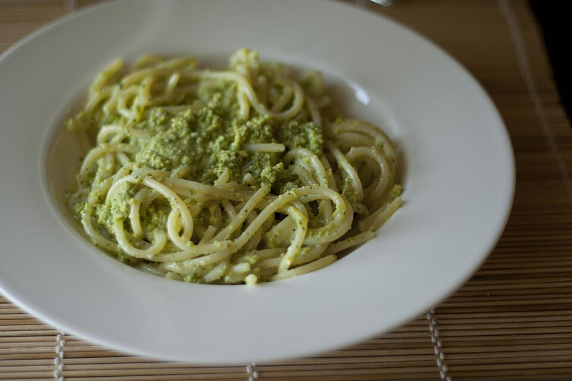

Home
Vegan Pesto Pasta

Photograph by Luca Nebuloni, licensed under CC BY 2.0.
Description
My wife and I absolutely love this vegan pesto pasta. I'm not vegan, but my wife is, so we're always on the hunt for tasty meat-and-dairy-free recipes. Most store-bought pesto isn't vegan, but it turns out it's super easy to make your own in a food processor (or a blender also works, though it takes longer). This makes for a simple and delicious weeknight dinner, especially if you pair it with some garlic bread. Bon appetit!
Ingredients
- 1/2 lb Pasta of your choice (I recommend farfalle or spaghetti)
- 1/2 cup cashews or pine nuts
- 3 cloves garlic
- 2/3 cup olive oil
- 1/3 cup nutritional yeast
- 2 cups fresh basil leaves
- 2 tablespoons lemon juice
- salt and pepper to taste
- a sprinkle of parmesan (or more, you say when)
Steps
- Cook pasta according to directions on box.
- While pasta is cooking, add all other ingredients to a food processer and blend until smooth. If mixture is too thick, add water or olive oil as needed.
- When pasta is finished cooking, drain and add pesto sauce to pot of cooked pasta.
- Serve with a sprinkle of parmesan on top.